import pandas as pd
import numpy as np
import matplotlib.pyplot as plt
import seaborn as sns
import shap
from sklearn.model_selection import train_test_split
from sklearn.preprocessing import StandardScaler
from sklearn.linear_model import LogisticRegression
from sklearn.tree import DecisionTreeClassifier
from sklearn.ensemble import RandomForestClassifier
from sklearn.svm import SVC
from sklearn.inspection import permutation_importance
from sklearn.preprocessing import LabelEncoder, OrdinalEncoder
import category_encoders as ce
from xgboost.sklearn import XGBClassifier
from sklearn.ensemble import GradientBoostingClassifier
from sklearn.metrics import mean_squared_error, accuracy_score, confusion_matrix, classification_report,roc_auc_score,roc_curveDATA LOADING AND PREPROCESSING
IMPORTING VARIOUS DEPENDENCIES
#load diabetes readmission data to panda dataframe
dd = pd.read_csv("./diabetic_data.csv", na_values ='?')Columns (10) have mixed types.Specify dtype option on import or set low_memory=False.#Print first 5 columns
dd.head()| encounter_id | patient_nbr | race | gender | age | weight | admission_type_id | discharge_disposition_id | admission_source_id | time_in_hospital | ... | citoglipton | insulin | glyburide-metformin | glipizide-metformin | glimepiride-pioglitazone | metformin-rosiglitazone | metformin-pioglitazone | change | diabetesMed | readmitted | |
|---|---|---|---|---|---|---|---|---|---|---|---|---|---|---|---|---|---|---|---|---|---|
| 0 | 2278392 | 8222157 | Caucasian | Female | [0-10) | NaN | 6 | 25 | 1 | 1 | ... | No | No | No | No | No | No | No | No | No | NO |
| 1 | 149190 | 55629189 | Caucasian | Female | [10-20) | NaN | 1 | 1 | 7 | 3 | ... | No | Up | No | No | No | No | No | Ch | Yes | >30 |
| 2 | 64410 | 86047875 | AfricanAmerican | Female | [20-30) | NaN | 1 | 1 | 7 | 2 | ... | No | No | No | No | No | No | No | No | Yes | NO |
| 3 | 500364 | 82442376 | Caucasian | Male | [30-40) | NaN | 1 | 1 | 7 | 2 | ... | No | Up | No | No | No | No | No | Ch | Yes | NO |
| 4 | 16680 | 42519267 | Caucasian | Male | [40-50) | NaN | 1 | 1 | 7 | 1 | ... | No | Steady | No | No | No | No | No | Ch | Yes | NO |
5 rows × 50 columns
#Print data shape
dd.shape(101766, 50)#Get Data Information
dd.info()<class 'pandas.core.frame.DataFrame'>
RangeIndex: 101766 entries, 0 to 101765
Data columns (total 50 columns):
# Column Non-Null Count Dtype
--- ------ -------------- -----
0 encounter_id 101766 non-null int64
1 patient_nbr 101766 non-null int64
2 race 99493 non-null object
3 gender 101766 non-null object
4 age 101766 non-null object
5 weight 3197 non-null object
6 admission_type_id 101766 non-null int64
7 discharge_disposition_id 101766 non-null int64
8 admission_source_id 101766 non-null int64
9 time_in_hospital 101766 non-null int64
10 payer_code 61510 non-null object
11 medical_specialty 51817 non-null object
12 num_lab_procedures 101766 non-null int64
13 num_procedures 101766 non-null int64
14 num_medications 101766 non-null int64
15 number_outpatient 101766 non-null int64
16 number_emergency 101766 non-null int64
17 number_inpatient 101766 non-null int64
18 diag_1 101745 non-null object
19 diag_2 101408 non-null object
20 diag_3 100343 non-null object
21 number_diagnoses 101766 non-null int64
22 max_glu_serum 101766 non-null object
23 A1Cresult 101766 non-null object
24 metformin 101766 non-null object
25 repaglinide 101766 non-null object
26 nateglinide 101766 non-null object
27 chlorpropamide 101766 non-null object
28 glimepiride 101766 non-null object
29 acetohexamide 101766 non-null object
30 glipizide 101766 non-null object
31 glyburide 101766 non-null object
32 tolbutamide 101766 non-null object
33 pioglitazone 101766 non-null object
34 rosiglitazone 101766 non-null object
35 acarbose 101766 non-null object
36 miglitol 101766 non-null object
37 troglitazone 101766 non-null object
38 tolazamide 101766 non-null object
39 examide 101766 non-null object
40 citoglipton 101766 non-null object
41 insulin 101766 non-null object
42 glyburide-metformin 101766 non-null object
43 glipizide-metformin 101766 non-null object
44 glimepiride-pioglitazone 101766 non-null object
45 metformin-rosiglitazone 101766 non-null object
46 metformin-pioglitazone 101766 non-null object
47 change 101766 non-null object
48 diabetesMed 101766 non-null object
49 readmitted 101766 non-null object
dtypes: int64(13), object(37)
memory usage: 38.8+ MB#list of all columns
dd.columnsIndex(['encounter_id', 'patient_nbr', 'race', 'gender', 'age', 'weight',
'admission_type_id', 'discharge_disposition_id', 'admission_source_id',
'time_in_hospital', 'payer_code', 'medical_specialty',
'num_lab_procedures', 'num_procedures', 'num_medications',
'number_outpatient', 'number_emergency', 'number_inpatient', 'diag_1',
'diag_2', 'diag_3', 'number_diagnoses', 'max_glu_serum', 'A1Cresult',
'metformin', 'repaglinide', 'nateglinide', 'chlorpropamide',
'glimepiride', 'acetohexamide', 'glipizide', 'glyburide', 'tolbutamide',
'pioglitazone', 'rosiglitazone', 'acarbose', 'miglitol', 'troglitazone',
'tolazamide', 'examide', 'citoglipton', 'insulin',
'glyburide-metformin', 'glipizide-metformin',
'glimepiride-pioglitazone', 'metformin-rosiglitazone',
'metformin-pioglitazone', 'change', 'diabetesMed', 'readmitted'],
dtype='object')#Statistical description of each columns
dd.describe()| encounter_id | patient_nbr | admission_type_id | discharge_disposition_id | admission_source_id | time_in_hospital | num_lab_procedures | num_procedures | num_medications | number_outpatient | number_emergency | number_inpatient | number_diagnoses | |
|---|---|---|---|---|---|---|---|---|---|---|---|---|---|
| count | 1.017660e+05 | 1.017660e+05 | 101766.000000 | 101766.000000 | 101766.000000 | 101766.000000 | 101766.000000 | 101766.000000 | 101766.000000 | 101766.000000 | 101766.000000 | 101766.000000 | 101766.000000 |
| mean | 1.652016e+08 | 5.433040e+07 | 2.024006 | 3.715642 | 5.754437 | 4.395987 | 43.095641 | 1.339730 | 16.021844 | 0.369357 | 0.197836 | 0.635566 | 7.422607 |
| std | 1.026403e+08 | 3.869636e+07 | 1.445403 | 5.280166 | 4.064081 | 2.985108 | 19.674362 | 1.705807 | 8.127566 | 1.267265 | 0.930472 | 1.262863 | 1.933600 |
| min | 1.252200e+04 | 1.350000e+02 | 1.000000 | 1.000000 | 1.000000 | 1.000000 | 1.000000 | 0.000000 | 1.000000 | 0.000000 | 0.000000 | 0.000000 | 1.000000 |
| 25% | 8.496119e+07 | 2.341322e+07 | 1.000000 | 1.000000 | 1.000000 | 2.000000 | 31.000000 | 0.000000 | 10.000000 | 0.000000 | 0.000000 | 0.000000 | 6.000000 |
| 50% | 1.523890e+08 | 4.550514e+07 | 1.000000 | 1.000000 | 7.000000 | 4.000000 | 44.000000 | 1.000000 | 15.000000 | 0.000000 | 0.000000 | 0.000000 | 8.000000 |
| 75% | 2.302709e+08 | 8.754595e+07 | 3.000000 | 4.000000 | 7.000000 | 6.000000 | 57.000000 | 2.000000 | 20.000000 | 0.000000 | 0.000000 | 1.000000 | 9.000000 |
| max | 4.438672e+08 | 1.895026e+08 | 8.000000 | 28.000000 | 25.000000 | 14.000000 | 132.000000 | 6.000000 | 81.000000 | 42.000000 | 76.000000 | 21.000000 | 16.000000 |
#Check missing values in the categorical columns
dd.isnull().sum()encounter_id 0
patient_nbr 0
race 2273
gender 0
age 0
weight 98569
admission_type_id 0
discharge_disposition_id 0
admission_source_id 0
time_in_hospital 0
payer_code 40256
medical_specialty 49949
num_lab_procedures 0
num_procedures 0
num_medications 0
number_outpatient 0
number_emergency 0
number_inpatient 0
diag_1 21
diag_2 358
diag_3 1423
number_diagnoses 0
max_glu_serum 0
A1Cresult 0
metformin 0
repaglinide 0
nateglinide 0
chlorpropamide 0
glimepiride 0
acetohexamide 0
glipizide 0
glyburide 0
tolbutamide 0
pioglitazone 0
rosiglitazone 0
acarbose 0
miglitol 0
troglitazone 0
tolazamide 0
examide 0
citoglipton 0
insulin 0
glyburide-metformin 0
glipizide-metformin 0
glimepiride-pioglitazone 0
metformin-rosiglitazone 0
metformin-pioglitazone 0
change 0
diabetesMed 0
readmitted 0
dtype: int64#calculating the number of missing values (unknown/invalid) in 'gender'
print('gender', dd['gender'][dd['gender'] == 'Unknown/Invalid'].count())gender 3handling missing values
#drop columns with missing values greater than 45%
dd = dd.drop(['weight','payer_code','medical_specialty'], axis = 1)#drop columns with one value occuring in more than 90%
dd = dd.drop(['repaglinide', 'nateglinide',
'chlorpropamide', 'glimepiride', 'acetohexamide', 'glipizide',
'glyburide', 'tolbutamide', 'pioglitazone', 'rosiglitazone', 'acarbose',
'miglitol', 'troglitazone', 'tolazamide', 'examide', 'citoglipton', 'glyburide-metformin', 'glipizide-metformin',
'glimepiride-pioglitazone', 'metformin-rosiglitazone',
'metformin-pioglitazone'],axis =1)#info of new dataset
dd.info()<class 'pandas.core.frame.DataFrame'>
RangeIndex: 101766 entries, 0 to 101765
Data columns (total 26 columns):
# Column Non-Null Count Dtype
--- ------ -------------- -----
0 encounter_id 101766 non-null int64
1 patient_nbr 101766 non-null int64
2 race 99493 non-null object
3 gender 101766 non-null object
4 age 101766 non-null object
5 admission_type_id 101766 non-null int64
6 discharge_disposition_id 101766 non-null int64
7 admission_source_id 101766 non-null int64
8 time_in_hospital 101766 non-null int64
9 num_lab_procedures 101766 non-null int64
10 num_procedures 101766 non-null int64
11 num_medications 101766 non-null int64
12 number_outpatient 101766 non-null int64
13 number_emergency 101766 non-null int64
14 number_inpatient 101766 non-null int64
15 diag_1 101745 non-null object
16 diag_2 101408 non-null object
17 diag_3 100343 non-null object
18 number_diagnoses 101766 non-null int64
19 max_glu_serum 101766 non-null object
20 A1Cresult 101766 non-null object
21 metformin 101766 non-null object
22 insulin 101766 non-null object
23 change 101766 non-null object
24 diabetesMed 101766 non-null object
25 readmitted 101766 non-null object
dtypes: int64(13), object(13)
memory usage: 20.2+ MB#remove missing instances in race and gender
dd = dd.dropna( how='any', subset=['race'])
dd.drop(dd[dd['gender'] == "Unknown/Invalid"].index, inplace = True)#drop diag_1, diag_2, diag_3
dd = dd.drop(['diag_1','diag_2','diag_3'], axis = 1)#checkifanymissingvalueisleft
print (dd.isnull().values.any())False#check if missing value left in gender
print('gender', dd['gender'][dd['gender'] == 'Unknown/Invalid'].count()) gender 0dd.info()<class 'pandas.core.frame.DataFrame'>
Int64Index: 99492 entries, 0 to 101765
Data columns (total 23 columns):
# Column Non-Null Count Dtype
--- ------ -------------- -----
0 encounter_id 99492 non-null int64
1 patient_nbr 99492 non-null int64
2 race 99492 non-null object
3 gender 99492 non-null object
4 age 99492 non-null object
5 admission_type_id 99492 non-null int64
6 discharge_disposition_id 99492 non-null int64
7 admission_source_id 99492 non-null int64
8 time_in_hospital 99492 non-null int64
9 num_lab_procedures 99492 non-null int64
10 num_procedures 99492 non-null int64
11 num_medications 99492 non-null int64
12 number_outpatient 99492 non-null int64
13 number_emergency 99492 non-null int64
14 number_inpatient 99492 non-null int64
15 number_diagnoses 99492 non-null int64
16 max_glu_serum 99492 non-null object
17 A1Cresult 99492 non-null object
18 metformin 99492 non-null object
19 insulin 99492 non-null object
20 change 99492 non-null object
21 diabetesMed 99492 non-null object
22 readmitted 99492 non-null object
dtypes: int64(13), object(10)
memory usage: 18.2+ MB#encode some features to binary
dd['A1Cresult'] = dd['A1Cresult'].replace('>7', 1)
dd['A1Cresult'] = dd['A1Cresult'].replace('>8', 1)
dd['A1Cresult'] = dd['A1Cresult'].replace('Norm', 0)
dd['A1Cresult'] = dd['A1Cresult'].replace('None', -99)
dd['max_glu_serum'] = dd['max_glu_serum'].replace('>200', 1)
dd['max_glu_serum'] = dd['max_glu_serum'].replace('>300', 1)
dd['max_glu_serum'] = dd['max_glu_serum'].replace('Norm', 0)
dd['max_glu_serum'] = dd['max_glu_serum'].replace('None', -99)#binary conversion cont
dd['change'] = dd['change'].replace('Ch', 1)
dd['change'] = dd['change'].replace('No', 0)
dd['gender'] = dd['gender'].replace('Male', 1)
dd['gender'] = dd['gender'].replace('Female', 0)
dd['diabetesMed'] = dd['diabetesMed'].replace('Yes', 1)
dd['diabetesMed'] = dd['diabetesMed'].replace('No', 0)
# keys is the same as before
for col in dd.columns:
dd[col] = dd[col].replace('No', 0)
dd[col] = dd[col].replace('Steady', 1)
dd[col] = dd[col].replace('Up', 1)
dd[col] = dd[col].replace('Down', 1)#Encode the race column
encoder = LabelEncoder()
dd["race"] = encoder.fit_transform(dd["race"])#Reduce the ages to midpoint value
dd['age'] = dd['age'].replace("[0-10)",5)
dd['age'] = dd['age'].replace("[10-20)",15)
dd['age'] = dd['age'].replace("[20-30)",25)
dd['age'] = dd['age'].replace("[30-40)",35)
dd['age'] = dd['age'].replace("[40-50)",45)
dd['age'] = dd['age'].replace("[50-60)",55)
dd['age'] = dd['age'].replace("[60-70)",65)
dd['age'] = dd['age'].replace("[70-80)",75)
dd['age'] = dd['age'].replace("[80-90)",85)
dd['age'] = dd['age'].replace("[90-100)",95)
#remove duplicates using the 'patient_nbr'
df = dd.drop_duplicates(subset= ['patient_nbr'], keep = 'first')
df.shape
(70442, 55)(70442, 55)df['readmitted'].value_counts()NO 41666
>30 21834
<30 6167
Name: readmitted, dtype: int64#reduce the readmitted target value to binary
df['readmitted'] = df['readmitted'].replace('>30', 0)
df['readmitted'] = df['readmitted'].replace('<30', 1)
df['readmitted'] = df['readmitted'].replace('NO', 0)
A value is trying to be set on a copy of a slice from a DataFrame.
Try using .loc[row_indexer,col_indexer] = value instead
See the caveats in the documentation: https://pandas.pydata.org/pandas-docs/stable/user_guide/indexing.html#returning-a-view-versus-a-copy
A value is trying to be set on a copy of a slice from a DataFrame.
Try using .loc[row_indexer,col_indexer] = value instead
See the caveats in the documentation: https://pandas.pydata.org/pandas-docs/stable/user_guide/indexing.html#returning-a-view-versus-a-copy
A value is trying to be set on a copy of a slice from a DataFrame.
Try using .loc[row_indexer,col_indexer] = value instead
See the caveats in the documentation: https://pandas.pydata.org/pandas-docs/stable/user_guide/indexing.html#returning-a-view-versus-a-copy#remove the encounter_id and patient_nbr as they are not useful to the model
df = df.drop(['encounter_id','patient_nbr'], axis = 1)df.head().T| 0 | 1 | 2 | 3 | 4 | |
|---|---|---|---|---|---|
| race | 2 | 2 | 0 | 2 | 2 |
| gender | 0 | 0 | 0 | 1 | 1 |
| age | 5 | 15 | 25 | 35 | 45 |
| admission_type_id | 6 | 1 | 1 | 1 | 1 |
| discharge_disposition_id | 25 | 1 | 1 | 1 | 1 |
| admission_source_id | 1 | 7 | 7 | 7 | 7 |
| time_in_hospital | 1 | 3 | 2 | 2 | 1 |
| num_lab_procedures | 41 | 59 | 11 | 44 | 51 |
| num_procedures | 0 | 0 | 5 | 1 | 0 |
| num_medications | 1 | 18 | 13 | 16 | 8 |
| number_outpatient | 0 | 0 | 2 | 0 | 0 |
| number_emergency | 0 | 0 | 0 | 0 | 0 |
| number_inpatient | 0 | 0 | 1 | 0 | 0 |
| number_diagnoses | 1 | 9 | 6 | 7 | 5 |
| max_glu_serum | -99 | -99 | -99 | -99 | -99 |
| A1Cresult | -99 | -99 | -99 | -99 | -99 |
| metformin | 0 | 0 | 0 | 0 | 0 |
| insulin | 0 | 1 | 0 | 1 | 1 |
| change | 0 | 1 | 0 | 1 | 1 |
| diabetesMed | 0 | 1 | 1 | 1 | 1 |
| readmitted | 0 | 0 | 0 | 0 | 0 |
#check info of dataset
df.info()<class 'pandas.core.frame.DataFrame'>
Int64Index: 69667 entries, 0 to 101765
Data columns (total 21 columns):
# Column Non-Null Count Dtype
--- ------ -------------- -----
0 race 69667 non-null int64
1 gender 69667 non-null int64
2 age 69667 non-null int64
3 admission_type_id 69667 non-null int64
4 discharge_disposition_id 69667 non-null int64
5 admission_source_id 69667 non-null int64
6 time_in_hospital 69667 non-null int64
7 num_lab_procedures 69667 non-null int64
8 num_procedures 69667 non-null int64
9 num_medications 69667 non-null int64
10 number_outpatient 69667 non-null int64
11 number_emergency 69667 non-null int64
12 number_inpatient 69667 non-null int64
13 number_diagnoses 69667 non-null int64
14 max_glu_serum 69667 non-null int64
15 A1Cresult 69667 non-null int64
16 metformin 69667 non-null int64
17 insulin 69667 non-null int64
18 change 69667 non-null int64
19 diabetesMed 69667 non-null int64
20 readmitted 69667 non-null int64
dtypes: int64(21)
memory usage: 11.7 MB#convert originally categorical columns to categorical
i = ['A1Cresult', 'metformin','change','insulin', 'max_glu_serum',"diabetesMed",'admission_source_id','gender','age','discharge_disposition_id', 'admission_type_id',"race"]
df[i] = df[i].astype('object')df.info()<class 'pandas.core.frame.DataFrame'>
Int64Index: 69667 entries, 0 to 101765
Data columns (total 21 columns):
# Column Non-Null Count Dtype
--- ------ -------------- -----
0 race 69667 non-null object
1 gender 69667 non-null object
2 age 69667 non-null object
3 admission_type_id 69667 non-null object
4 discharge_disposition_id 69667 non-null object
5 admission_source_id 69667 non-null object
6 time_in_hospital 69667 non-null int64
7 num_lab_procedures 69667 non-null int64
8 num_procedures 69667 non-null int64
9 num_medications 69667 non-null int64
10 number_outpatient 69667 non-null int64
11 number_emergency 69667 non-null int64
12 number_inpatient 69667 non-null int64
13 number_diagnoses 69667 non-null int64
14 max_glu_serum 69667 non-null object
15 A1Cresult 69667 non-null object
16 metformin 69667 non-null object
17 insulin 69667 non-null object
18 change 69667 non-null object
19 diabetesMed 69667 non-null object
20 readmitted 69667 non-null int64
dtypes: int64(9), object(12)
memory usage: 11.7+ MBdf.head().T| 0 | 1 | 2 | 3 | 4 | |
|---|---|---|---|---|---|
| race | 2 | 2 | 0 | 2 | 2 |
| gender | 0 | 0 | 0 | 1 | 1 |
| age | 5 | 15 | 25 | 35 | 45 |
| admission_type_id | 6 | 1 | 1 | 1 | 1 |
| discharge_disposition_id | 25 | 1 | 1 | 1 | 1 |
| admission_source_id | 1 | 7 | 7 | 7 | 7 |
| time_in_hospital | 1 | 3 | 2 | 2 | 1 |
| num_lab_procedures | 41 | 59 | 11 | 44 | 51 |
| num_procedures | 0 | 0 | 5 | 1 | 0 |
| num_medications | 1 | 18 | 13 | 16 | 8 |
| number_outpatient | 0 | 0 | 2 | 0 | 0 |
| number_emergency | 0 | 0 | 0 | 0 | 0 |
| number_inpatient | 0 | 0 | 1 | 0 | 0 |
| number_diagnoses | 1 | 9 | 6 | 7 | 5 |
| max_glu_serum | -99 | -99 | -99 | -99 | -99 |
| A1Cresult | -99 | -99 | -99 | -99 | -99 |
| metformin | 0 | 0 | 0 | 0 | 0 |
| insulin | 0 | 1 | 0 | 1 | 1 |
| change | 0 | 1 | 0 | 1 | 1 |
| diabetesMed | 0 | 1 | 1 | 1 | 1 |
| readmitted | 0 | 0 | 0 | 0 | 0 |
Data Visualization
# Readmission Distribution
sns.countplot(df['readmitted']).set_title("Readmission Distribution")Pass the following variable as a keyword arg: x. From version 0.12, the only valid positional argument will be `data`, and passing other arguments without an explicit keyword will result in an error or misinterpretation.Text(0.5, 1.0, 'Readmission Distribution')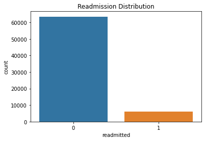
#visualize distribution of Race against readmission0: African/American 1: Asian 2: Caucasian 3: Hispanic 4:Others
fig = plt.figure(figsize=(7,7))
sns.countplot(y=df['race'])<AxesSubplot:xlabel='count', ylabel='race'>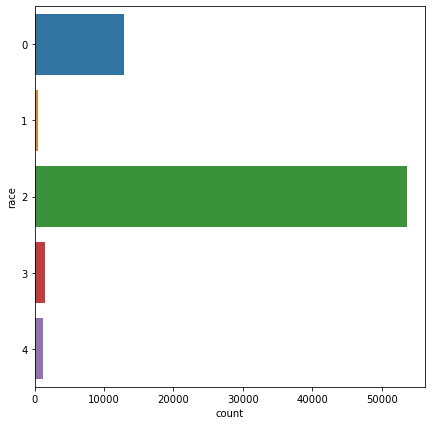
#Race against readmission
#0: African/American 1: Asian 2: Caucasian 3: Hispanic 4:Others
fig = plt.figure(figsize=(10,10))
sns.countplot(y = df['race'], hue = df['readmitted'])
<AxesSubplot:xlabel='count', ylabel='race'>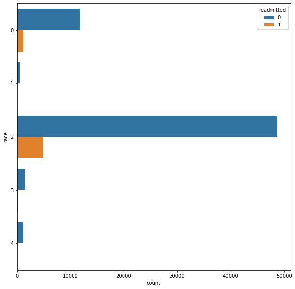
#gender against readmission, 0:male, 1:female
fig = plt.figure(figsize=(8,8))
sns.countplot(df['gender'], hue = df['readmitted']).set_title("Gender of Patient VS. Readmission")Pass the following variable as a keyword arg: x. From version 0.12, the only valid positional argument will be `data`, and passing other arguments without an explicit keyword will result in an error or misinterpretation.Text(0.5, 1.0, 'Gender of Patient VS. Readmission')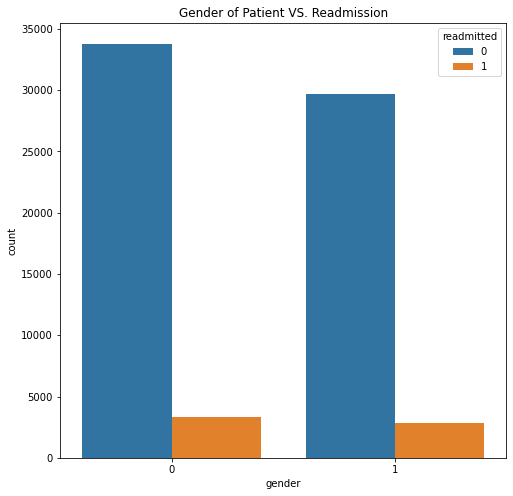
#diabetesMedication number against readmission, 0:no, 1:yes
fig = plt.figure(figsize=(8,8))
sns.countplot(df['diabetesMed'], hue = df['readmitted']).set_title('Number of Diabetes Medication VS Readmission')Pass the following variable as a keyword arg: x. From version 0.12, the only valid positional argument will be `data`, and passing other arguments without an explicit keyword will result in an error or misinterpretation.Text(0.5, 1.0, 'Number of Diabetes Medication VS Readmission')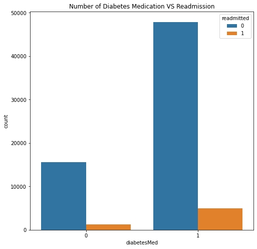
#age against readmission
sns.countplot(df['age'], hue = df['readmitted']).set_title("Age VS. Readmission")Pass the following variable as a keyword arg: x. From version 0.12, the only valid positional argument will be `data`, and passing other arguments without an explicit keyword will result in an error or misinterpretation.Text(0.5, 1.0, 'Age VS. Readmission')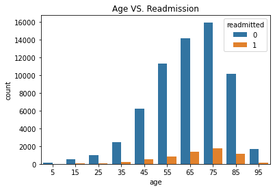
MODEL BUILDING
#Split dataset into testing and training data
target = "readmitted"
y = df[target]
X = df.drop(columns = target)
X_train, X_test, y_train, y_test = train_test_split(X, y, test_size=.2, random_state=15)#Using the SMOTE technique To handle unbalanced data
from imblearn.over_sampling import SMOTE
from collections import Counter
print('Original dataset shape {}'.format(Counter(y_train)))
sm = SMOTE(random_state=15)
train_input, train_output = sm.fit_sample(X_train, y_train)
print('New dataset shape {}'.format(Counter(train_output)))Original dataset shape Counter({0: 50839, 1: 4894})
New dataset shape Counter({0: 50839, 1: 50839})#split dataset into training and testing data
train_input = pd.DataFrame(train_input, columns = list(X.columns))
X_train, X_test, y_train, y_test = train_test_split(train_input, train_output, test_size=0.20, random_state=0)print(train_input.dtypes)race object
gender object
age object
admission_type_id object
discharge_disposition_id object
admission_source_id object
time_in_hospital int64
num_lab_procedures int64
num_procedures int64
num_medications int64
number_outpatient int64
number_emergency int64
number_inpatient int64
number_diagnoses int64
max_glu_serum object
A1Cresult object
metformin object
insulin object
change object
diabetesMed object
dtype: objectDecision Tree
#DecisionTreeClassifier
dtc = DecisionTreeClassifier(max_depth=28, min_samples_split=10,random_state = 10)
dtc.fit(X_train, y_train)
dtc_pred = dtc.predict(X_test)#Evaluation for decisionTreeClassifier
print("The Accuracy is ", accuracy_score(y_test, dtc_pred))
print("The Classification report on the decision tree model is" , classification_report(y_test, dtc_pred))
cm =confusion_matrix(y_test,dtc_pred)
plt.figure(figsize=(5,3), )
sns.heatmap(cm,annot=True,fmt='g')
#plot ROC curve
y_score = dtc.predict_proba(X_test)[:,1]
print("The ROC _AUC score for decision classifier model is: ", roc_auc_score(y_test, y_score))
fpr,tpr, threshold= roc_curve(y_test, y_score)
plt.subplots(1,figsize=(8,8))
plt.title('ROC - decision tree classifier')
plt.plot(fpr,tpr)
plt.plot([0,1], ls="--")
plt.plot([0,0],[1,0], c=".7"),plt.plot([1,1],c =".7")
plt.ylabel("True Positive Rate")
plt.xlabel("false Positive Rate")
plt.show()The Accuracy is 0.9147816679779701
The Classification report on the decision tree model is precision recall f1-score support
0 0.90 0.93 0.92 10149
1 0.93 0.90 0.91 10187
accuracy 0.91 20336
macro avg 0.92 0.91 0.91 20336
weighted avg 0.92 0.91 0.91 20336
The ROC _AUC score for decision classifier model is: 0.9371655500800901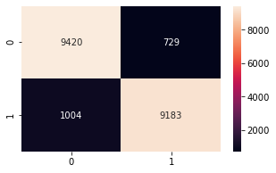
RandomForestClassifier
#Random Forest Classifier
from sklearn.ensemble import RandomForestClassifier
rfc = RandomForestClassifier(n_estimators = 10, max_depth=25, min_samples_split=10, random_state = 10)
rfc.fit(X_train, y_train)
rfc_pred = rfc.predict(X_test)#evaluate accuracy
print("The Accuracy is ", accuracy_score(y_test, rfc_pred))
print("The Classification report on the random forest model is" , classification_report(y_test, rfc_pred))
cm =confusion_matrix(y_test,rfc_pred)
plt.figure(figsize=(5,3), )
sns.heatmap(cm,annot=True,fmt='g')
#plot ROC curve
y_score = rfc.predict_proba(X_test)[:,1]
print("The ROC _AUC score for random forest classifier model is: ", roc_auc_score(y_test, y_score))
fpr,tpr, threshold= roc_curve(y_test, y_score)
plt.subplots(1,figsize=(8,8))
plt.title('ROC - random forest classifier')
plt.plot(fpr,tpr)
plt.plot([0,1], ls="--")
plt.plot([0,0],[1,0], c=".7"),plt.plot([1,1],c =".7")
plt.ylabel("True Positive Rate")
plt.xlabel("false Positive Rate")
plt.show()The Accuracy is 0.9399095200629426
The Classification report on the random forest model is precision recall f1-score support
0 0.90 0.99 0.94 10149
1 0.99 0.89 0.94 10187
accuracy 0.94 20336
macro avg 0.95 0.94 0.94 20336
weighted avg 0.95 0.94 0.94 20336
The ROC _AUC score for random forest classifier model is: 0.9648944915323376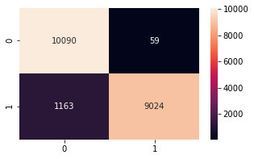
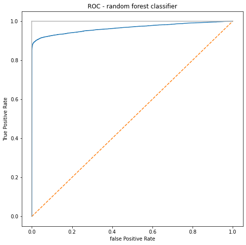
Gradient Boosting Classifier
#GradientBoostingClassifiers
gbc= GradientBoostingClassifier(n_estimators = 10, max_depth = 25, random_state = 10)
gbc.fit(X_train,y_train)
gbc_prd = gbc.predict(X_test)#Evaluation for gradientboostingclassifier
print("The Accuracy is ", accuracy_score(y_test, gbc_prd))
print("The Classification report on the GRADIENT BOOSTING tree model is" , classification_report(y_test, gbc_prd))
cm =confusion_matrix(y_test,gbc_prd)
plt.figure(figsize=(5,3), )
sns.heatmap(cm,annot=True,fmt='g')
#plot ROC curve
y_score = gbc.predict_proba(X_test)[:,1]
print("The ROC _AUC score for gradientboostingclassifier is: ", roc_auc_score(y_test, y_score))
fpr,tpr, threshold= roc_curve(y_test, y_score)
plt.subplots(1,figsize=(8,8))
plt.title('ROC - gradientboostingclassifier')
plt.plot(fpr,tpr)
plt.plot([0,1], ls="--")
plt.plot([0,0],[1,0], c=".7"),plt.plot([1,1],c =".7")
plt.ylabel("True Positive Rate")
plt.xlabel("false Positive Rate")
plt.show()The Accuracy is 0.9100118017309206
The Classification report on the GRADIENT BOOSTING tree model is precision recall f1-score support
0 0.91 0.91 0.91 10149
1 0.91 0.91 0.91 10187
accuracy 0.91 20336
macro avg 0.91 0.91 0.91 20336
weighted avg 0.91 0.91 0.91 20336
The ROC _AUC score for gradientboostingclassifier is: 0.9348775542444476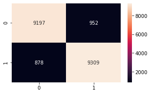
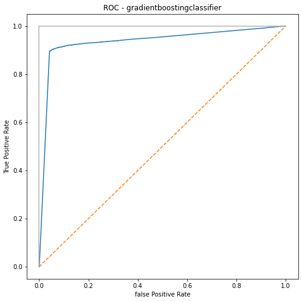
GINI IMPORTANCE FOR RANDOM FOREST, DECISION TREE AND GRADIENT BOOSTING CLASSIFIER
#important features for Decision Tree
feature_names = X_train.columns
feature_imports = dtc.feature_importances_
most_imp_features = pd.DataFrame([f for f in zip(feature_names,feature_imports)], columns=["Feature", "Importance"])
most_imp_features.sort_values(by="Importance", inplace=True)
plt.figure(figsize=(15,10))
plt.barh(range(len(most_imp_features)), most_imp_features.Importance, align='center', alpha=0.8)
plt.yticks(range(len(most_imp_features)), most_imp_features.Feature, fontsize=14)
plt.xlabel('Importance')
plt.title('Most important features - Decision Tree ')
plt.show()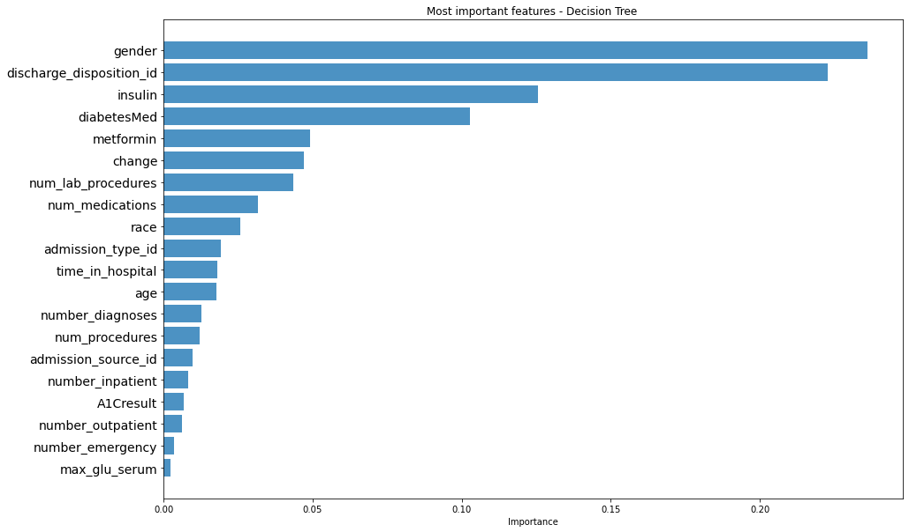
#important features for Random Forest
feature_names = X_train.columns
feature_imports = rfc.feature_importances_
most_imp_features = pd.DataFrame([f for f in zip(feature_names,feature_imports)], columns=["Feature", "Importance"])
most_imp_features.sort_values(by="Importance", inplace=True)
plt.figure(figsize=(15,10))
plt.barh(range(len(most_imp_features)), most_imp_features.Importance, align='center', alpha=0.8)
plt.yticks(range(len(most_imp_features)), most_imp_features.Feature, fontsize=14)
plt.xlabel('Importance')
plt.title('important features - Random Forest ')
plt.show()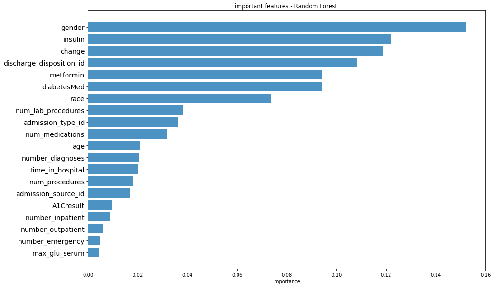
#Feature importance for Gradient Boostng Classifier
feature_names = X_train.columns
feature_imports = gbc.feature_importances_
most_imp_features = pd.DataFrame([f for f in zip(feature_names,feature_imports)], columns=["Feature", "Importance"])
most_imp_features.sort_values(by="Importance", inplace=True)
plt.figure(figsize=(15,10))
plt.barh(range(len(most_imp_features)), most_imp_features.Importance, align='center', alpha=0.8)
plt.yticks(range(len(most_imp_features)), most_imp_features.Feature, fontsize=14)
plt.xlabel('Importance')
plt.title('Most important features - gradient boosting classifier ')
plt.show()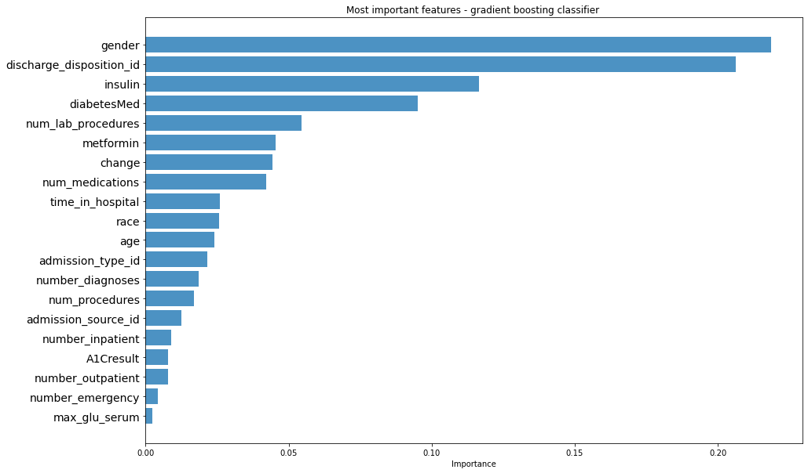
FEATURE IMPORTANCE USING SHAP VALUES
#shap values for randomforest classifier
explainer = shap.TreeExplainer(rfc)
shap_values = explainer.shap_values(X_train)
shap.summary_plot(shap_values, features = X_train, feature_names = X_train.columns, plot_type ="bar")#Decision Tree Classifier
explainer = shap.TreeExplainer(dtc)
shap_values = explainer.shap_values(X_train)
shap.summary_plot(shap_values, features = X_train, feature_names = X_train.columns, plot_type ="bar")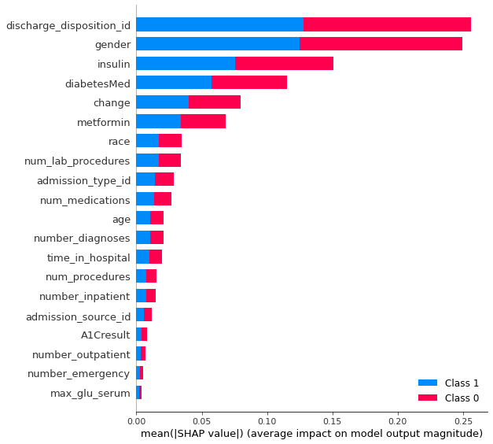
#gradient boosting classifier
explainer = shap.TreeExplainer(gbc)
shap_values = explainer.shap_values(X_train)
shap.summary_plot(shap_values, features = X_train, feature_names = X_train.columns, plot_type ="bar")Retraining and evaluation with feature importance
decision tree
## retrain decision tree with top 10 features of decision tree
train_inputDTC= train_input.drop(['age', 'time_in_hospital', 'num_procedures',
'number_outpatient', 'number_emergency', 'number_inpatient', 'max_glu_serum', 'A1Cresult','admission_source_id','number_diagnoses',], axis=1)
print(train_inputDTC.columns)
X_train, X_test, y_train, y_test = train_test_split(train_inputDTC, train_output, test_size=0.20)
dtc = DecisionTreeClassifier(max_depth=28, min_samples_split=10, random_state=0)
dtc.fit(X_train, y_train)
dtc_pred = dtc.predict(X_test)
#evaluate
print("The Accuracy is ", accuracy_score(y_test, dtc_pred))
print("The Classification report on the decision tree model is" , classification_report(y_test, dtc_pred))
cm =confusion_matrix(y_test,dtc_pred)
plt.figure(figsize=(5,3), )
sns.heatmap(cm,annot=True,fmt='g')
y_score1 = dtc.predict_proba(X_test)[:,1]
print("The ROC _AUC score for decision tree is: ", roc_auc_score(y_test, y_score1))
fpr,tpr, threshold= roc_curve(y_test, y_score1)
plt.subplots(1,figsize=(8,8))
plt.title('ROC - decision tree(10 features)')
plt.plot(fpr,tpr)
plt.plot([0,1], ls="--")
plt.plot([0,0],[1,0], c=".7"),plt.plot([1,1],c =".7")
plt.ylabel("True Positive Rate")
plt.xlabel("false Positive Rate")
plt.show()## retrain decision tree with top 6 features of decision tree
train_inputDTC= train_input.drop(['age', 'time_in_hospital', 'num_procedures',
'number_outpatient', 'number_emergency', 'number_inpatient', 'max_glu_serum', 'A1Cresult','admission_source_id','number_diagnoses','num_medications','admission_type_id','num_lab_procedures','race',], axis=1)
X_train, X_test, y_train, y_test = train_test_split(train_inputDTC, train_output, test_size=0.20)
dtc = DecisionTreeClassifier(max_depth=28, min_samples_split=10,random_state=0)
dtc.fit(X_train, y_train)
dtc_pred = dtc.predict(X_test)
#Evaluation for decisionTreeClassifier
print("The Accuracy is ", accuracy_score(y_test, dtc_pred))
print("The Classification report on the Decision tree model is" , classification_report(y_test, dtc_pred))
cm =confusion_matrix(y_test,dtc_pred)
plt.figure(figsize=(5,3), )
sns.heatmap(cm,annot=True,fmt='g')
y_score1 = dtc.predict_proba(X_test)[:,1]
print("The ROC _AUC score for Decision tree is: ", roc_auc_score(y_test, y_score1))
fpr,tpr, threshold= roc_curve(y_test, y_score1)
plt.subplots(1,figsize=(8,8))
plt.title('ROC - Decision Tree(6 features)')
plt.plot(fpr,tpr)
plt.plot([0,1], ls="--")
plt.plot([0,0],[1,0], c=".7"),plt.plot([1,1],c =".7")
plt.ylabel("True Positive Rate")
plt.xlabel("false Positive Rate")
plt.show()random forest classifier
#randomforest classifier
# retrain random forest with top 10 features
#Random forest top 10 features
train_inputRFC= train_input.drop(['age', 'time_in_hospital', 'num_procedures',
'number_outpatient', 'number_emergency', 'number_inpatient', 'max_glu_serum', 'A1Cresult','number_diagnoses','admission_source_id'], axis=1)
X_train, X_test, y_train, y_test = train_test_split(train_inputRFC, train_output, test_size=0.20)
#Random Forest Classifier
from sklearn.ensemble import RandomForestClassifier
rfc = RandomForestClassifier(n_estimators = 10, max_depth=25, min_samples_split=10, random_state = 10)
rfc.fit(X_train, y_train)
rfc_pred = rfc.predict(X_test)
#evaluate
print("The Accuracy is ", accuracy_score(y_test, rfc_pred))
print("The Classification report on the random forest model is" , classification_report(y_test, rfc_pred))
cm =confusion_matrix(y_test,rfc_pred)
plt.figure(figsize=(5,3), )
sns.heatmap(cm,annot=True,fmt='g')
y_score1 = rfc.predict_proba(X_test)[:,1]
print("The ROC _AUC score for random forest is: ", roc_auc_score(y_test, y_score1))
fpr,tpr, threshold= roc_curve(y_test, y_score1)
plt.subplots(1,figsize=(8,8))
plt.title('ROC - Random Forest Classifier (10 features)')
plt.plot(fpr,tpr)
plt.plot([0,1], ls="--")
plt.plot([0,0],[1,0], c=".7"),plt.plot([1,1],c =".7")
plt.ylabel("True Positive Rate")
plt.xlabel("false Positive Rate")
plt.show()#retrain Random Forest classifier with top 6 features
train_inputRFC= train_input.drop(['age', 'time_in_hospital', 'num_procedures',
'number_outpatient', 'number_emergency', 'number_inpatient', 'max_glu_serum', 'A1Cresult','num_medications','num_lab_procedures','admission_source_id','number_diagnoses', 'admission_type_id','metformin'], axis=1)
X_train, X_test, y_train, y_test = train_test_split(train_inputRFC, train_output, test_size=0.20, random_state=0)
from sklearn.ensemble import RandomForestClassifier
rfc = RandomForestClassifier(n_estimators = 10, max_depth=25, min_samples_split=10, random_state = 10)
rfc.fit(X_train, y_train)
rfc_pred = rfc.predict(X_test)
print("The Accuracy is ", accuracy_score(y_test, rfc_pred))
print("The Classification report on the random forest model is" , classification_report(y_test, rfc_pred))
cm =confusion_matrix(y_test,rfc_pred)
plt.figure(figsize=(5,3), )
sns.heatmap(cm,annot=True,fmt='g')
#Evaluate
y_score1 = rfc.predict_proba(X_test)[:,1]
print("The ROC _AUC score for random forestt is: ", roc_auc_score(y_test, y_score1))
fpr,tpr, threshold= roc_curve(y_test, y_score1)
plt.subplots(1,figsize=(8,8))
plt.title('ROC - random forest (6 features)')
plt.plot(fpr,tpr)
plt.plot([0,1], ls="--")
plt.plot([0,0],[1,0], c=".7"),plt.plot([1,1],c =".7")
plt.ylabel("True Positive Rate")
plt.xlabel("false Positive Rate")
plt.show()gradient boosting classifier
#gradient boosting classifier
#retrain gradient boosting classifier with top 10 features
train_inputGBC= train_input.drop(['age', 'admission_source_id', 'num_procedures',
'number_outpatient', 'number_emergency', 'number_inpatient',
'number_diagnoses', 'max_glu_serum', 'A1Cresult','admission_type_id'], axis=1)
X_train, X_test, y_train, y_test = train_test_split(train_inputGBC, train_output, test_size=0.20, random_state=0)
#GradientBoostingClassifiers
gbc= GradientBoostingClassifier(n_estimators = 10, max_depth = 25, random_state = 10)
gbc.fit(X_train,y_train)
gbc_prd = gbc.predict(X_test)
#Evaluation for gradientboostingclassifier
print("The Accuracy is ", accuracy_score(y_test, gbc_prd))
print("The Classification report on the gradientboostingclassifier model is" , classification_report(y_test, gbc_prd))
cm =confusion_matrix(y_test,gbc_prd)
plt.figure(figsize=(5,3), )
sns.heatmap(cm,annot=True,fmt='g')
y_score1 = gbc.predict_proba(X_test)[:,1]
print("The ROC _AUC score for gradientboostingclassifiert is: ", roc_auc_score(y_test, y_score1))
fpr,tpr, threshold= roc_curve(y_test, y_score1)
plt.subplots(1,figsize=(8,8))
plt.title('ROC - gradientboosting(10 features)')
plt.plot(fpr,tpr)
plt.plot([0,1], ls="--")
plt.plot([0,0],[1,0], c=".7"),plt.plot([1,1],c =".7")
plt.ylabel("True Positive Rate")
plt.xlabel("false Positive Rate")
plt.show()#retrain gradient boosting classifier with top 6 features
train_inputGBC= train_input.drop(['age', 'admission_source_id', 'num_procedures',
'number_outpatient', 'number_emergency', 'number_inpatient',
'number_diagnoses', 'max_glu_serum', 'A1Cresult','admission_type_id','race','time_in_hospital','num_medications','change'], axis=1)
train_inputGBC.info()
X_train, X_test, y_train, y_test = train_test_split(train_inputGBC, train_output, test_size=0.20, random_state=0)
gbc= GradientBoostingClassifier(n_estimators = 10, max_depth = 25, random_state = 10)
gbc.fit(X_train,y_train)
gbc_prd = gbc.predict(X_test)
#Evaluation for gradientboostingclassifier
print("The Accuracy is ", accuracy_score(y_test, gbc_prd))
print("The Classification report on the gradientboostingclassifier model is" , classification_report(y_test, gbc_prd))
cm =confusion_matrix(y_test,gbc_prd)
plt.figure(figsize=(5,3), )
sns.heatmap(cm,annot=True,fmt='g')
y_score1 = gbc.predict_proba(X_test)[:,1]
print("The ROC _AUC score for gradientboostingclassifier is: ", roc_auc_score(y_test, y_score1))
fpr,tpr, threshold= roc_curve(y_test, y_score1)
plt.subplots(1,figsize=(8,8))
plt.title('ROC - gradientboosting(6 features)')
plt.plot(fpr,tpr)
plt.plot([0,1], ls="--")
plt.plot([0,0],[1,0], c=".7"),plt.plot([1,1],c =".7")
plt.ylabel("True Positive Rate")
plt.xlabel("false Positive Rate")
plt.show()Retraining and Evaluation with shap values
Decision tree
## retrain decision tree with top 10 features of decision tree
train_inputDTC= train_input.drop(['age', 'time_in_hospital', 'num_procedures',
'number_outpatient', 'number_emergency', 'number_inpatient', 'max_glu_serum', 'A1Cresult','admission_source_id','number_diagnoses',], axis=1)
X_train, X_test, y_train, y_test = train_test_split(train_inputDTC, train_output, test_size=0.20, random_state=0)
dtc = DecisionTreeClassifier(max_depth=28, min_samples_split=10,random_state = 0)
dtc.fit(X_train, y_train)
dtc_pred = dtc.predict(X_test)
#evaluate
print("The Accuracy is ", accuracy_score(y_test, dtc_pred))
print("The Classification report on the decision tree model is" , classification_report(y_test, dtc_pred))
cm =confusion_matrix(y_test,dtc_pred)
plt.figure(figsize=(5,3), )
sns.heatmap(cm,annot=True,fmt='g')
y_score1 = dtc.predict_proba(X_test)[:,1]
print("The ROC _AUC score for decision tree is: ", roc_auc_score(y_test, y_score1))
fpr,tpr, threshold= roc_curve(y_test, y_score1)
plt.subplots(1,figsize=(8,8))
plt.title('ROC - decision tree (6 features)')
plt.plot(fpr,tpr)
plt.plot([0,1], ls="--")
plt.plot([0,0],[1,0], c=".7"),plt.plot([1,1],c =".7")
plt.ylabel("True Positive Rate")
plt.xlabel("false Positive Rate")
plt.show()## retrain decision tree with top 6 features of decision tree
train_inputDTC= train_input.drop(['age', 'time_in_hospital', 'num_procedures',
'number_outpatient', 'number_emergency', 'number_inpatient', 'max_glu_serum', 'A1Cresult','admission_source_id','number_diagnoses','num_medications','admission_type_id','num_lab_procedures','race',], axis=1)
X_train, X_test, y_train, y_test = train_test_split(train_inputDTC, train_output, test_size=0.20)
dtc = DecisionTreeClassifier(max_depth=28, min_samples_split=10, random_state=0)
dtc.fit(X_train, y_train)
dtc_pred = dtc.predict(X_test)
#Evaluation for decisionTreeClassifier
print("The Accuracy is ", accuracy_score(y_test, dtc_pred))
print("The Classification report on the decision tree model is" , classification_report(y_test, dtc_pred))
cm =confusion_matrix(y_test,dtc_pred)
plt.figure(figsize=(5,3), )
sns.heatmap(cm,annot=True,fmt='g')
y_score1 = dtc.predict_proba(X_test)[:,1]
print("The ROC _AUC score for decision tree is: ", roc_auc_score(y_test, y_score1))
fpr,tpr, threshold= roc_curve(y_test, y_score1)
plt.subplots(1,figsize=(8,8))
plt.title('ROC - decision tree(6 features)')
plt.plot(fpr,tpr)
plt.plot([0,1], ls="--")
plt.plot([0,0],[1,0], c=".7"),plt.plot([1,1],c =".7")
plt.ylabel("True Positive Rate")
plt.xlabel("false Positive Rate")
plt.show()Random Forest Classifier
# retrain random forest with top 10 features
#Random forest top 10 features
train_inputRFC= train_input.drop(['age', 'time_in_hospital', 'num_procedures',
'number_outpatient', 'number_emergency', 'number_inpatient', 'max_glu_serum', 'A1Cresult','num_medications','num_lab_procedures'], axis=1)
X_train, X_test, y_train, y_test = train_test_split(train_inputRFC, train_output, test_size=0.20, random_state=0)
#Random Forest Classifier
from sklearn.ensemble import RandomForestClassifier
rfc = RandomForestClassifier(n_estimators = 10, max_depth=25, min_samples_split=10, random_state = 10)
rfc.fit(X_train, y_train)
rfc_pred = rfc.predict(X_test)
#evaluate
print("The Accuracy is ", accuracy_score(y_test, rfc_pred))
print("The Classification report on the random forest model is" , classification_report(y_test, rfc_pred))
cm =confusion_matrix(y_test,rfc_pred)
plt.figure(figsize=(5,3), )
sns.heatmap(cm,annot=True,fmt='g')
y_score1 = rfc.predict_proba(X_test)[:,1]
print("The ROC _AUC score for random forest is: ", roc_auc_score(y_test, y_score1))
fpr,tpr, threshold= roc_curve(y_test, y_score1)
plt.subplots(1,figsize=(8,8))
plt.title('ROC - Random Forest Classifier (10 features)')
plt.plot(fpr,tpr)
plt.plot([0,1], ls="--")
plt.plot([0,0],[1,0], c=".7"),plt.plot([1,1],c =".7")
plt.ylabel("True Positive Rate")
plt.xlabel("false Positive Rate")
plt.show()#retrain Random Forest classifier with top 6 features
train_inputRFC= train_input.drop(['age', 'time_in_hospital', 'num_procedures',
'number_outpatient', 'number_emergency', 'number_inpatient', 'max_glu_serum', 'A1Cresult','num_medications','num_lab_procedures','admission_source_id','number_diagnoses', 'admission_type_id','metformin'], axis=1)
X_train, X_test, y_train, y_test = train_test_split(train_inputRFC, train_output, test_size=0.20, random_state=0)
from sklearn.ensemble import RandomForestClassifier
rfc = RandomForestClassifier(n_estimators = 10, max_depth=25, min_samples_split=10, random_state = 10)
rfc.fit(X_train, y_train)
rfc_pred = rfc.predict(X_test)
print("The Accuracy is ", accuracy_score(y_test, rfc_pred))
print("The Classification report on the random forest model is" , classification_report(y_test, rfc_pred))
cm =confusion_matrix(y_test,rfc_pred)
plt.figure(figsize=(5,3), )
sns.heatmap(cm,annot=True,fmt='g')
#Evaluate
y_score1 = rfc.predict_proba(X_test)[:,1]
print("The ROC _AUC score for random forest is: ", roc_auc_score(y_test, y_score1))
fpr,tpr, threshold= roc_curve(y_test, y_score1)
plt.subplots(1,figsize=(8,8))
plt.title('ROC - random forest(5 features)')
plt.plot(fpr,tpr)
plt.plot([0,1], ls="--")
plt.plot([0,0],[1,0], c=".7"),plt.plot([1,1],c =".7")
plt.ylabel("True Positive Rate")
plt.xlabel("false Positive Rate")
plt.show()gradient boosting classifier
#retrain gradient boosting classifier with top 10 features
train_inputGBC= train_input.drop(['age', 'admission_source_id', 'time_in_hospital', 'num_procedures',
'number_outpatient', 'number_emergency', 'number_inpatient',
'number_diagnoses', 'max_glu_serum', 'A1Cresult'], axis=1)
X_train, X_test, y_train, y_test = train_test_split(train_inputGBC, train_output, test_size=0.20, random_state=0)
#GradientBoostingClassifiers
gbc= GradientBoostingClassifier(n_estimators = 10, max_depth = 25, random_state = 10)
gbc.fit(X_train,y_train)
gbc_prd = gbc.predict(X_test)
#Evaluation for gradientboostingclassifier
print("The Accuracy is ", accuracy_score(y_test, gbc_prd))
print("The Classification report on the gradient boosting classifier model is" , classification_report(y_test, gbc_prd))
cm =confusion_matrix(y_test,gbc_prd)
plt.figure(figsize=(5,3), )
sns.heatmap(cm,annot=True,fmt='g')
y_score1 = gbc.predict_proba(X_test)[:,1]
print("The ROC _AUC score for gradientboosting is: ", roc_auc_score(y_test, y_score1))
fpr,tpr, threshold= roc_curve(y_test, y_score1)
plt.subplots(1,figsize=(8,8))
plt.title('ROC - gradient boosting(10 features)')
plt.plot(fpr,tpr)
plt.plot([0,1], ls="--")
plt.plot([0,0],[1,0], c=".7"),plt.plot([1,1],c =".7")
plt.ylabel("True Positive Rate")
plt.xlabel("false Positive Rate")
plt.show()#retrain gradient boosting classifier with top 6 features
train_inputGBC= train_input.drop(['age', 'admission_source_id', 'time_in_hospital', 'num_procedures',
'number_outpatient', 'number_emergency', 'number_inpatient',
'number_diagnoses', 'max_glu_serum', 'A1Cresult','num_medications','admission_type_id','race','num_lab_procedures'], axis=1)
X_train, X_test, y_train, y_test = train_test_split(train_inputGBC, train_output, test_size=0.20, random_state=0)
gbc= GradientBoostingClassifier(n_estimators = 10, max_depth = 25, random_state = 10)
gbc.fit(X_train,y_train)
gbc_prd = gbc.predict(X_test)
#Evaluation for gradientboostingclassifier
print("The Accuracy is ", accuracy_score(y_test, gbc_prd))
print("The Classification report on the gradient boosting model is" , classification_report(y_test, gbc_prd))
cm =confusion_matrix(y_test,gbc_prd)
plt.figure(figsize=(5,3), )
sns.heatmap(cm,annot=True,fmt='g')
y_score1 = gbc.predict_proba(X_test)[:,1]
print("The ROC _AUC score for gradient boosting is: ", roc_auc_score(y_test, y_score1))
fpr,tpr, threshold= roc_curve(y_test, y_score1)
plt.subplots(1,figsize=(8,8))
plt.title('ROC - gradient boosting(6 features)')
plt.plot(fpr,tpr)
plt.plot([0,1], ls="--")
plt.plot([0,0],[1,0], c=".7"),plt.plot([1,1],c =".7")
plt.ylabel("True Positive Rate")
plt.xlabel("false Positive Rate")
plt.show()XGB CLASSIFIER
train_input2 = train_input#TRANSFORM FEATURES TO INTEGERS AS REQUIRED BY XGBOOST
lbl = LabelEncoder()
train_input2['gender'] = lbl.fit_transform(train_input2['gender'].astype(int))
train_input2['age'] = lbl.fit_transform(train_input2['age'].astype(str))
train_input2['admission_type_id'] = lbl.fit_transform(train_input2['admission_type_id'].astype(str))
train_input2['discharge_disposition_id'] = lbl.fit_transform(train_input2['discharge_disposition_id'].astype(str))
train_input2['admission_source_id'] = lbl.fit_transform(train_input2['admission_source_id'].astype(str))
train_input2['max_glu_serum'] = lbl.fit_transform(train_input2['max_glu_serum'].astype(str))
train_input2['A1Cresult'] = lbl.fit_transform(train_input2['A1Cresult'].astype(str))
train_input2['metformin'] = lbl.fit_transform(train_input2['metformin'].astype(str))
train_input2['insulin'] = lbl.fit_transform(train_input2['insulin'].astype(str))
train_input2['change'] = lbl.fit_transform(train_input2['change'].astype(str))
train_input2['diabetesMed'] = lbl.fit_transform(train_input2['diabetesMed'].astype(str))
train_input2['race'] = lbl.fit_transform(train_input2['race'].astype(str))
print(train_input2.dtypes)#split new dataset
X_train2, X_test2, y_train2, y_test2 = train_test_split(train_input2, train_output, test_size=0.20, random_state=0)xgb= XGBClassifier(n_estimators = 10, max_depth = 25, random_state = 10)
xgb.fit(X_train2,y_train2)
xgb_prd = xgb.predict(X_test2)
print(classification_report(y_test2, xgb_prd))
cm = confusion_matrix(y_test2, xgb_prd)
plt.figure(figsize=(5,3), )
sns.heatmap(cm,annot=True,fmt='g')
y_score1 = xgb.predict_proba(X_test2)[:,1]
print("The ROC _AUC score for XGBoost is: ", roc_auc_score(y_test2, y_score1))
fpr,tpr, threshold= roc_curve(y_test2, y_score1)
plt.subplots(1,figsize=(8,8))
plt.title('ROC - XGB')
plt.plot(fpr,tpr)
plt.plot([0,1], ls="--")
plt.plot([0,0],[1,0], c=".7"),plt.plot([1,1],c =".7")
plt.ylabel("True Positive Rate")
plt.xlabel("false Positive Rate")
plt.show()#print xgboost shap values
explainer = shap.TreeExplainer(xgb)
shap_values = explainer.shap_values(X_train2)
shap.summary_plot(shap_values, features = X_train2, feature_names = X_train.columns, plot_type ="bar")#Feature importance for xgboost using gini importance
feature_names = X_train2.columns
feature_imports = xgb.feature_importances_
most_imp_features = pd.DataFrame([f for f in zip(feature_names,feature_imports)], columns=["Feature", "Importance"])
most_imp_features.sort_values(by="Importance", inplace=True)
plt.figure(figsize=(10,6))
plt.barh(range(len(most_imp_features)), most_imp_features.Importance, align='center', alpha=0.8)
plt.yticks(range(len(most_imp_features)), most_imp_features.Feature, fontsize=14)
plt.xlabel('Importance')
plt.title('Most important features - XGBoost ')
plt.show()re-evaluation with gini importance
#retrain with top 10 features
train_input3 = train_input2.drop(['age', 'admission_source_id', 'time_in_hospital', 'num_procedures',
'number_outpatient', 'number_emergency', 'number_inpatient',
'number_diagnoses', 'num_medications','num_lab_procedures'], axis=1)
X_train2, X_test2, y_train2, y_test2 = train_test_split(train_input3, train_output, test_size=0.20, random_state=0)
xgb= XGBClassifier(n_estimators = 10, max_depth = 25, random_state = 10)
xgb.fit(X_train2,y_train2)
xgb_prd = xgb.predict(X_test2)
print(classification_report(y_test2, xgb_prd))
cm = confusion_matrix(y_test2, xgb_prd)
plt.figure(figsize=(5,3), )
sns.heatmap(cm,annot=True,fmt='g')
y_score1 = xgb.predict_proba(X_test2)[:,1]
print("The ROC _AUC score for XGBoost is: ", roc_auc_score(y_test2, y_score1))
fpr,tpr, threshold= roc_curve(y_test2, y_score1)
plt.subplots(1,figsize=(8,8))
plt.title('ROC - XGBoost')
plt.plot(fpr,tpr)
plt.plot([0,1], ls="--")
plt.plot([0,0],[1,0], c=".7"),plt.plot([1,1],c =".7")
plt.ylabel("True Positive Rate")
plt.xlabel("false Positive Rate")
plt.show()# retrain with top 6 features
train_input4 = train_input2.drop(['age', 'admission_source_id', 'time_in_hospital', 'num_procedures',
'number_outpatient', 'number_emergency', 'number_inpatient','num_medications',
'number_diagnoses', 'max_glu_serum', 'A1Cresult',"gender",'num_lab_procedures', 'admission_type_id'], axis=1)
X_train2, X_test2, y_train2, y_test2 = train_test_split(train_input4, train_output, test_size=0.20, random_state=0)
xgb= XGBClassifier(n_estimators = 10, max_depth = 25, random_state = 10)
xgb.fit(X_train2,y_train2)
xgb_prd = xgb.predict(X_test2)
print(classification_report(y_test2, xgb_prd))
cm = confusion_matrix(y_test2, xgb_prd)
plt.figure(figsize=(5,3), )
sns.heatmap(cm,annot=True,fmt='g')
y_score1 = xgb.predict_proba(X_test2)[:,1]
print("The ROC _AUC score for XGBoost is: ", roc_auc_score(y_test2, y_score1))
fpr,tpr, threshold= roc_curve(y_test2, y_score1)
plt.subplots(1,figsize=(8,8))
plt.title('ROC - XGBoost')
plt.plot(fpr,tpr)
plt.plot([0,1], ls="--")
plt.plot([0,0],[1,0], c=".7"),plt.plot([1,1],c =".7")
plt.ylabel("True Positive Rate")
plt.xlabel("false Positive Rate")
plt.show()re-evaluation with shap values
#retrain with top 10 features
train_input3 = train_input2.drop(['age', 'admission_source_id', 'time_in_hospital', 'num_procedures',
'number_outpatient', 'number_emergency', 'number_inpatient',
'number_diagnoses', 'max_glu_serum', 'A1Cresult'], axis=1)
X_train2, X_test2, y_train2, y_test2 = train_test_split(train_input3, train_output, test_size=0.20, random_state=0)
xgb= XGBClassifier(n_estimators = 10, max_depth = 25, random_state = 10)
xgb.fit(X_train2,y_train2)
xgb_prd = xgb.predict(X_test2)
print(classification_report(y_test2, xgb_prd))
cm = confusion_matrix(y_test2, xgb_prd)
plt.figure(figsize=(5,3), )
sns.heatmap(cm,annot=True,fmt='g')
y_score1 = xgb.predict_proba(X_test2)[:,1]
print("The ROC _AUC score for XGBoost is: ", roc_auc_score(y_test2, y_score1))
fpr,tpr, threshold= roc_curve(y_test2, y_score1)
plt.subplots(1,figsize=(8,8))
plt.title('ROC - XGBoost')
plt.plot(fpr,tpr)
plt.plot([0,1], ls="--")
plt.plot([0,0],[1,0], c=".7"),plt.plot([1,1],c =".7")
plt.ylabel("True Positive Rate")
plt.xlabel("false Positive Rate")
plt.show()# retrain with top 6 features
train_input4 = train_input2.drop(['age', 'admission_source_id', 'time_in_hospital', 'num_procedures',
'number_outpatient', 'number_emergency', 'number_inpatient','num_medications',
'number_diagnoses', 'max_glu_serum', 'A1Cresult',"gender",'num_lab_procedures', 'admission_type_id'], axis=1)
X_train2, X_test2, y_train2, y_test2 = train_test_split(train_input4, train_output, test_size=0.20, random_state=0)
xgb= XGBClassifier(n_estimators = 10, max_depth = 25, random_state = 10)
xgb.fit(X_train2,y_train2)
xgb_prd = xgb.predict(X_test2)
print(classification_report(y_test2, xgb_prd))
cm = confusion_matrix(y_test2, xgb_prd)
plt.figure(figsize=(5,3), )
sns.heatmap(cm,annot=True,fmt='g')
y_score1 = xgb.predict_proba(X_test2)[:,1]
print("The ROC _AUC score for XGBoost is: ", roc_auc_score(y_test2, y_score1))
fpr,tpr, threshold= roc_curve(y_test2, y_score1)
plt.subplots(1,figsize=(8,8))
plt.title('ROC - XGBoost')
plt.plot(fpr,tpr)
plt.plot([0,1], ls="--")
plt.plot([0,0],[1,0], c=".7"),plt.plot([1,1],c =".7")
plt.ylabel("True Positive Rate")
plt.xlabel("false Positive Rate")
plt.show()